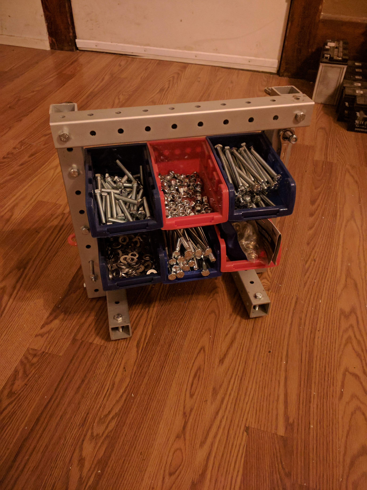
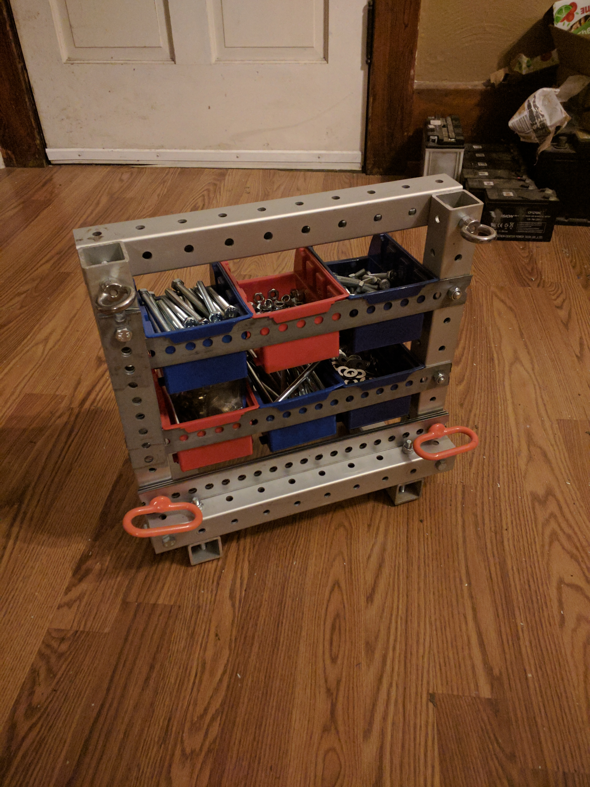

toolboxes revision 3732
^ Projects infobox ^^
| image | Toolbox.scad.png |
| designer | [[user:tim|Timothy Schmidt]] |
| date | 2019 |
| tools | [[wrenches|Wrenches]], [[3d_printers|3D printers]] |
| parts | [[bins|Bins]], [[bolts|Bolts]], [[end_caps|End caps]], [[frames|Frames]], [[nuts|Nuts]], [[plates|Plates]] |
| techniques | [[tri_joints|Tri joints]] |
Challenges
Building with Replimat requires reusing many parts. Organizing and carrying those parts from task to task can be cumbersome.
Approaches
Build a toolbox from Replimat components.

